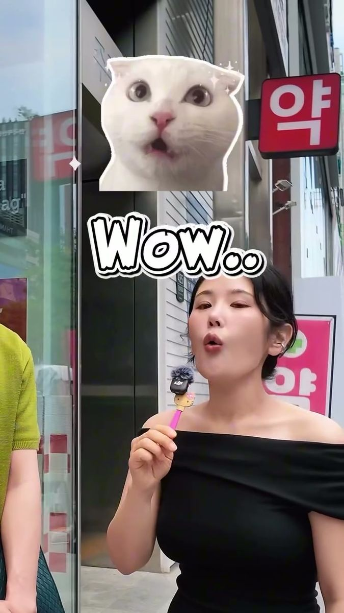

Find the right clinic
Tell me what you’d like to change. I send 2–3 verified clinics with honest prices and downtime, not just the ones with the biggest ad budget.

I’m Romie. I match international patients with verified skin & plastic surgery clinics, come with you on the day, and look after you once you’re home.


for you. Clinics pay us, only after your treatment.
현 사이트 문구 기준, 확인 필요Tell me what you’d like to change. I send 2–3 verified clinics with honest prices and downtime, not just the ones with the biggest ad budget.
I book it, meet you, sit next to you at the consultation, translate everything and walk you to the pharmacy. Coming alone is totally fine.

Day 1, day 7, day 30. Send me a photo any time. If something feels off, I talk to the clinic for you, even after you’re home.

 GuidesYour first treatment in Korea: where to startStart with a skin booster, know what you want before you walk in, and give yourself 1–2 days in Seoul.
GuidesYour first treatment in Korea: where to startStart with a skin booster, know what you want before you walk in, and give yourself 1–2 days in Seoul.
 Skin boostersRejuranSalmon-PN skin-regeneration injection.
Skin boostersRejuranSalmon-PN skin-regeneration injection.
 LiftingUltheraNon-invasive HIFU lifting that targets the SMAS layer.
LiftingUltheraNon-invasive HIFU lifting that targets the SMAS layer.
 GuidesBotox or skin booster? Booster or laser? Gangnam or Apgujeong?Three choices everyone asks about, answered the way Romie answers friends.
GuidesBotox or skin booster? Booster or laser? Gangnam or Apgujeong?Three choices everyone asks about, answered the way Romie answers friends.
 InjectablesBotoxRelaxes muscles for a slimmer jaw or smoother lines.
InjectablesBotoxRelaxes muscles for a slimmer jaw or smoother lines.
 LasersPico LaserPicosecond laser for pigment, pores and tone.
GuidesWhat Koreans actually get done at skin clinics (we asked on the street)Regular Botox, skin boosters and Ulthera came up most when we asked locals in Gangnam.
LasersPico LaserPicosecond laser for pigment, pores and tone.
GuidesWhat Koreans actually get done at skin clinics (we asked on the street)Regular Botox, skin boosters and Ulthera came up most when we asked locals in Gangnam.
Clinics pay me a referral fee, and only after your treatment is done. You pay the clinic directly at the normal walk-in price, with a written quote before anything is booked.
무료·수수료 구조 = 현 glowupseoul.com 문구 기준. 확인 필요Clinic visits, airport pickups and street interviews in Gangnam, straight from our Instagram.



Yes, it’s free for you. Partner clinics pay us a referral fee, and only after your treatment is completed. You pay the clinic directly, at the same price as any walk-in patient.
현 glowupseoul.com 문구 기준 ("completely free for you… compensated by partner clinics"). 실제 과금 구조 확인 필요Skin boosters. They work on almost every skin type, give that glossy glass-skin look, and you see results in two to three weeks.
▶ Watch Romie answer thisYes, many patients do. Your coordinator is with you at consultation and treatment, and there when you wake up from surgery.
Officially: certifications, case volume and government recognition. Personally: I trust clinics that genuinely care. The doctors listen, communicate, and want to solve your problem instead of treating you as a one-time customer. Those are the clinics I take you to.
▶ Watch Romie answer thisNo. It helps to know your own standards, because almost every clinic has a salesperson and their advice can be misleading. If you don’t know yet, tell me your concern and we start from there.
▶ Watch Romie answer thisThe cheapest price is usually a bait price. Once you’re there, other treatments get added and the total ends up similar or higher. Always compare the price of everything you’ll actually get.
▶ Watch Romie answer thisShared with permission. Names removed.
Romieeee is it normal that I still have some bumps on my skin? 😭
Ohh it depends on your skin type, but sometimes it takes 1–2 weeks!
Oh okay good!!!! Thanks haha ❤️
3 days after treatmentThey gave me little stickers to replace every two days, said only moisturizer on my neck and no running
It looks amazing 😍 I’m so happy everything went well
Me too!!! Couldn’t have done it without you
Treatment dayI’m doing well! A bit sore, strong headache, but just icing and elevating. 10am is perfect tomorrow!
Keep icing and resting well tonight. I’ll schedule the cab for 10am tomorrow as planned. Let me know if you need anything at all!
Surgery, night 1I was so happy to have you as my first client from Austria 😊 Safe travels back home
Thank you, it was really nice to meet you in person. I hope we can ski together next year in Austria!
Flight homeThank you so much lovie. It was so nice with you. Hopefully see you soon 💗
It was my pleasure! Hope everything else you planned went well
Last dayI definitely could not have done it without you 🥹 Thank you so much!
Pickup day Q&AWhat does a beauty concierge do?▶ 0:52
Q&AWhat does a beauty concierge do?▶ 0:52 Q&AHow do you know a clinic is trustworthy?▶ 0:57
Q&AHow do you know a clinic is trustworthy?▶ 0:57 Q&AThe biggest mistake foreigners make▶ 1:35
Q&AThe biggest mistake foreigners make▶ 1:35 This or thatBotox or skin boosters?▶ 1:34
This or thatBotox or skin boosters?▶ 1:34 Hot takeNever book the cheapest clinic▶ 0:51
Hot takeNever book the cheapest clinic▶ 0:51 StreetWhat do Koreans actually get done?▶ 1:49
StreetWhat do Koreans actually get done?▶ 1:49 StreetKorean men’s skincare secrets▶ 1:33
StreetKorean men’s skincare secrets▶ 1:33 StreetWould Korean girls recommend clinics?▶ 1:47
StreetWould Korean girls recommend clinics?▶ 1:47Your message gets written for you. Send it on WhatsApp, WeChat or email.